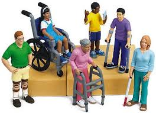
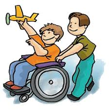

El sistema de locomocion permitira una mayor estimulacion motriz para emprender su entorno, la facilidad para asociar actividades que puedan realizar en su entorno de su vida cotidiana.
La deficiencia o discapacidad motriz es aquella alteración en huesos, articulaciones, músculos e incluso una afectación en el área motriz del cerebro, la cual impide la capacidad de movimiento y afecta en distintos niveles funciones como la manipulación, equilibrio, desplazamiento, habla o respiración.
Mayor independencia en la movilidad de la persona con problemas motrices.
Desarrollar un sistema de locomocion para personas con motrices.
Hacer la capacitacion para el uso del sistema de manera confiable.